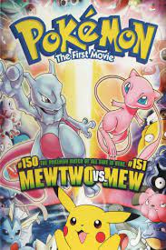

The film adaptation of the pokemon world was made in 1998.
It was named
"Pokémon: Mew vs Mewtwo".
Mew vs Mewtwo was quite successful and later there were other films dedicated to pocket monsters, up to the present day!

The first pokemon movies had a strong censorship compared to the author's original script.
Below there is an Italian video in which this censorship is analyzed:
La censura nel primo film Pokémon